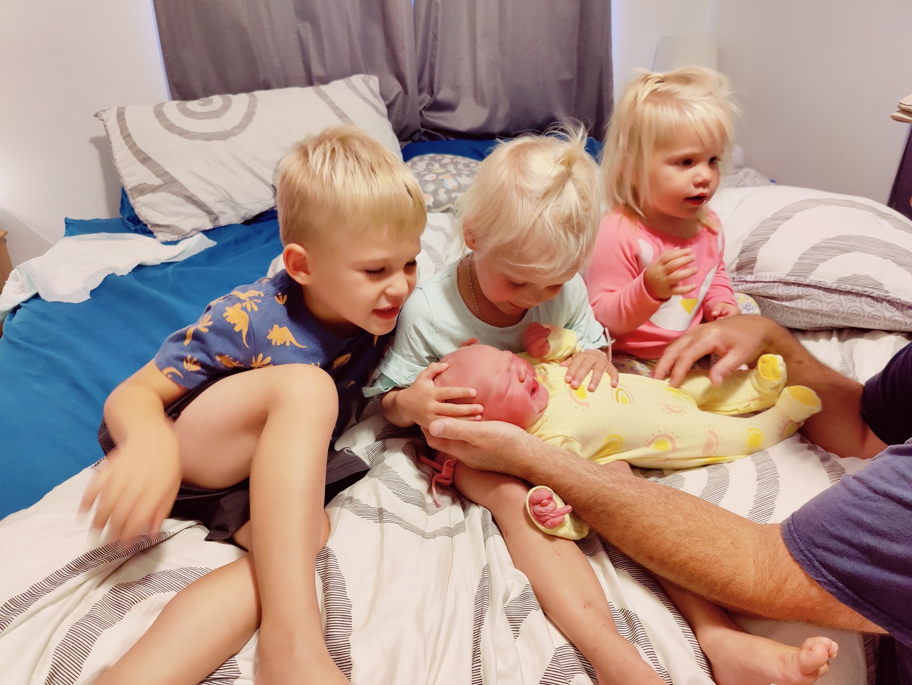
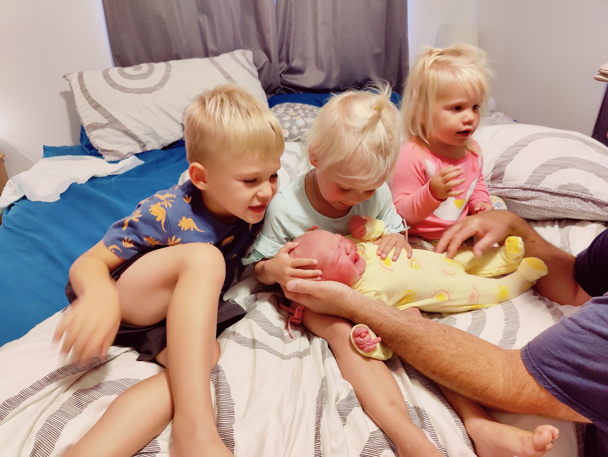
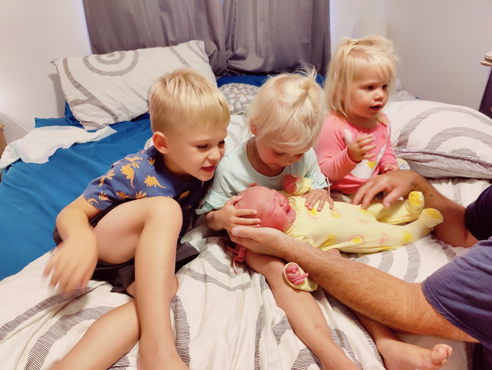
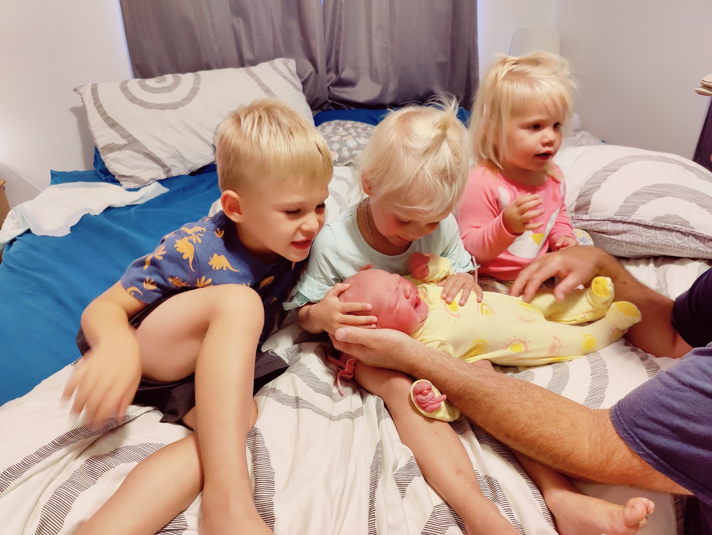

If you told me 5 years ago I would have a home birth in the future, I would’ve been horrified. I’ve had some big mental shifts on all things regarding pregnancy and labor and delivery throughout the course of my 4 children. With Micah and Nora, I was terrified of giving birth and wanted to numb myself. I felt if I could be unconscious, that would be the best way to do it. I was very fortunate to have straightforward births with them, and a completely adequate hospital experience.
With my third baby, Gracie, I wanted to do things differently. Recognizing that I had a ton of fear surrounding childbirth, I knew I needed to address that. I didn’t want fear to be my motivation for seeking out a hospital birth with an epidural. If I had a long labor and needed to rest, that was another story, but I was using the epidural to numb myself and my fear which I didn’t feel was a good enough reason for this birth. So I got a doula and did a lot of mental prep work preparing myself for my first unmedicated birth in the hospital. It was wonderful, and a great experience.
I had no medical interventions with Gracie, so we had talked about the possibility of giving birth at home with our next baby. I felt I was a good candidate physically; having no medical complications and each labor getting slightly faster and easier- thank you, God! The idea of not having to drive to the hospital while in labor, and being able to sleep in my own bed right after birth very much appealed to me. Plus, we live close to the hospital should we need to go there.
There were some things that did not appeal to me though, the biggest one being the fact that I have 3 other young (and often challenging) children to manage. My hospital stay in the past has honestly felt like a vacation. No laundry, meals brought to you, and just one newborn to care for. I did not want my kids present for the birth; that idea stressed me out. Our plan was that if I went into labor at night, we would leave the kids alone to sleep, but if I began labor during the day, one of the grandparents would take them, thankfully both sets are in town.
This fourth pregnancy was by far my easiest. I had the least amount of nausea/vomiting and felt physically very well. I have been so grateful pregnancy has been relatively easy for me; such a gift, and one I know I do not deserve. But like every other mom, I was anxious for baby to be on the outside. My due date of July 23rd came and went, and so did too many other days for my liking. My biggest disappointment was that my parents left for their weeklong trip to Norway on July 29th, and I was still pregnant.
On Monday, July 31st, I texted my midwives saying that after my appointment I had scheduled with them on Wednesday, I would be open to doing a membrane sweep and try midwives brew to help kickstart labor. They responded by saying they were both free that evening if we would like to plan a “labor party” for that night. I checked in with James and we both agreed.
My favorite part about this was having a plan. It brought me so much peace to be able to pack up the kids and send them to my wonderful in-laws house for a sleepover, and James and I could focus on hoping labor would start. Our midwives were waiting on call.
Previously, I had never been one to want to be induced because I’ve honestly never felt “done” being pregnant. I often feel much worse physically postpartum so I didn’t feel the need to rush into that phase. But I also had a great friend/ postpartum doula scheduled to come later that week, and I wanted to have a baby in my arms as I was now 41 weeks. I was also very skeptical of any labor induction strategies as none of them had historically seemed to work for me. Yet, the midwives did tell me that they’ve had great success with this drink before, so I was willing to give it a shot.
Midwives brew was something I’ve never heard of before, but it’s a drink you blend together. Apricot juice, lemon verbena tea, almond butter and castor oil. Thankfully only 2 tbs of castor oil, so it’s not going to send you immediately to the toilet. Before taking this, I had a brief appointment with my midwife to make sure I was a favorable candidate; a certain percentage dilated and effaced, and I was. I headed back home, James was bringing the 3 kids to his parents, and I blended up my drink and finished it at 6:15pm. It tasted very good!
James and I then went for a walk and I curb walked, and did a bunch of stairs hoping to help get into labor land. I am now downright crabby. I was thinking there’s no way this will work. We planned a whole evening with the kids gone, the midwives waiting, and nothing will happen. It’s just a silly drink. Then around 8:45pm, I started to have some contractions as we arrived back home. I started timing them on my app and they were pretty immediately intense (I couldn’t talk through them) and coming quickly. My phone alerted me that I should go to the hospital :)
We let our team know, and James started filling up the birth pool. The midwives arrived at our house around 10:15pm and I knew I was in full blown labor. Honestly, I was feeling very surprised that the drink worked haha. We had a birth room set up with everything in it a few weeks earlier, so we moved into that room.
It felt very good to get into the tub, although I will say this labor felt more intense than Gracie’s did. My contractions felt super challenging, but we were doing it. I was hoping my water would break soon as I was assuming that would bring some pressure relief.
Then, I felt the fetal ejection reflex. I experienced this for the first time with Gracie, which is essentially where your body pushes out the baby involuntarily, and you are not having to do forced pushing. I felt my water pop in the pool, and the ring of fire felt much more intense than I remember it feeling with Grace. The pushing happened quite quickly, I enjoy that part for the fact that pain from the contractions lets up tremendously for me.
It was so wild to feel baby’s head, and then the whole body slipped out and was handed right up to me, and I was very relieved this part was over. This photo above is an amazing shot my midwife got when his head was out. You can see his face under the water!
“It’s a boy!'' I said outloud. I had been leaning over the side of the tub/ on my knees to deliver him and now moved to sitting and getting to look all over this wonderful baby that we just brought into the world inside our house. We had the name Blaise picked out for months, so I was excited to introduce our midwives to him. He was so mellow and sleepy, which they assured me is more common for babies born in the water. He was absolutely covered in vernix, much more than my other 3. So much birthday frosting!
He was born at 12:45am on Tuesday, August 1st. Four hours of labor, and only 6.5 hours after drinking the midwives brew.
After a few minutes, I was assisted out of the tub and got to move right into my own bed. My wonderful team of two midwives cleaned up everything; the whole birth pool/room, the bathroom, the kitchen, leaving everything better than how they found it. All the while, I was dozing in bed with a nursing baby. They came into our room at the foot of the bed to assess him as well as weigh and measure. He was our biggest baby, weighing 9lb 9oz and 23.5 inches long! I’ve hardly heard of a baby so long.

The midwives left around 3:30am after making sure we had absolutely everything we needed. It was such a wonderful experience to feel so well taken care of, so peaceful and so relaxed being in our bed together with the freshest little baby.
We are so grateful to all our friends and family who supported us on this journey and made it possible. It truly takes a village. Thank you God for the gift of new life, and for filling our hearts with peace about the idea of home birth. It was such an amazing experience!